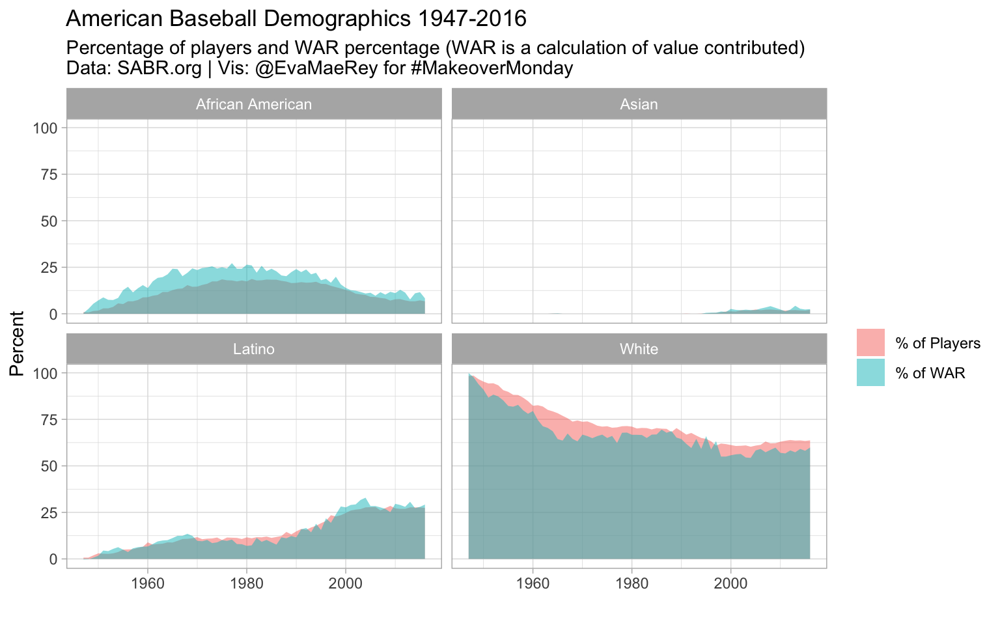
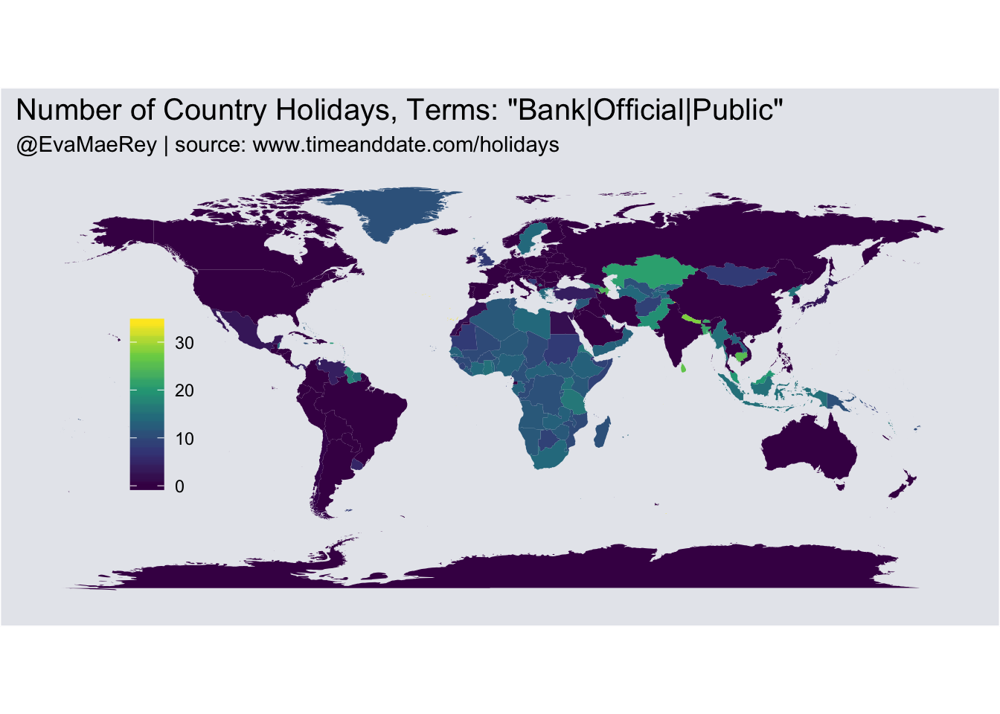
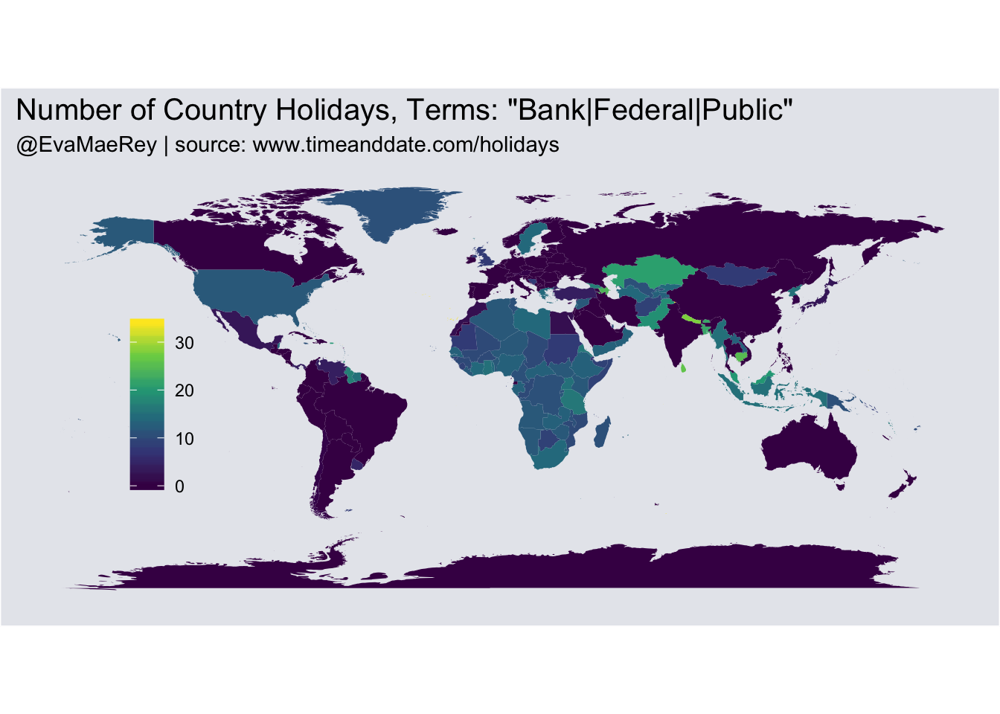
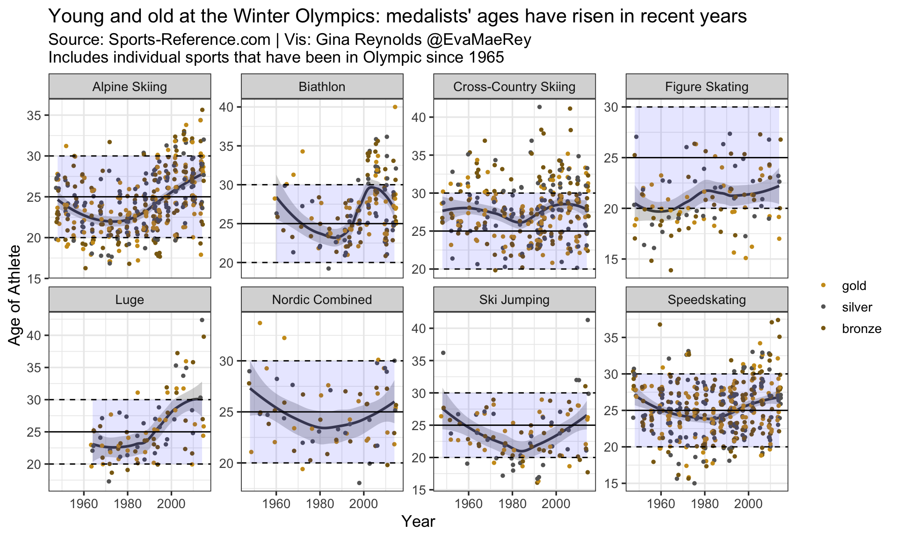

Chapter 4 Whiskey
library(readxl)
library(tidyverse)
library(png)
library(ggplot2)4.1 read in data, transform
dta = read_xlsx("raw_data/Irish Whiskey Sales by Volume.xlsx") %>%
filter(Country == "United States"|Country == "Ireland") %>%
filter(Year %in% c(1992, 2000, 2008, 2016)) %>%
group_by(Country, Year) %>%
summarise(Cases = sum(Cases, na.rm = T)) %>%
mutate(Cases100000 = Cases/100000 )4.2 Images from the noun project
img_cow=readPNG("raw_data/noun_194996_cc.png")[000:600, 57:650, 1:4]
## info reduction
img_cow=img_cow[seq(1, dim(img_cow)[1], by = 1),
seq(1, dim(img_cow)[2], by = 1),1:4]
pngCredit_cow="Whiskey by Mark S Waterhouse from the Noun Project"
plot(0:5, 0:5, type='n')
rasterImage(img_cow, 0, 0, 3, 3)
# img_chicken=readPNG("noun_42413_cc.png")[0:600, 650:50, 1:4]
# # info reduction
# img_chicken=img_chicken[seq(1, dim(img_chicken)[1], by = 1),
# seq(1, dim(img_chicken)[2], by = 1),
# 1:4]
# pngCredit_chicken="Chicken by Yair Cohen from the Noun Project"
img_cow_col = img_cow; img_cow_col[img_cow] = 0.439
my_array = array(c(img_cow, img_cow_col, img_cow_col), dim = dim(img_cow))
plot(0:4,0:4);rasterImage(my_array, 0, 0, 3, 3)
R <- cor(matrix(rnorm(40), 8))
round(R, 3)## [,1] [,2] [,3] [,4] [,5]
## [1,] 1.000 -0.304 0.711 -0.026 0.269
## [2,] -0.304 1.000 -0.446 -0.205 -0.198
## [3,] 0.711 -0.446 1.000 0.354 0.163
## [4,] -0.026 -0.205 0.354 1.000 0.105
## [5,] 0.269 -0.198 0.163 0.105 1.000d <- dim(R)
red <- ifelse(R < 0, -R, 0)
blue <- ifelse(R < 0, 0, R)
cols <- array(c(red, rep(0, prod(d)), blue),
c(d[1],d[2],3))
# png("rasterImage.png")
plot(0:5+0.5, 0:5+0.5, type="n")
rasterImage(cols, 0.5, 0.5, 5.5, 5.5,
interpolate=T)
4.3 Plotting
draw_icons <-
function(origin = c(0,0), size = .5, num_to_plot = round(76.4/10),
cols = 3, img = img_chicken, col = "black"){
rows <- ceiling(num_to_plot/cols)
x_pos <- rep(1:cols, rows)[1:num_to_plot]
x_pos <- x_pos - min(x_pos)
y_pos <- sort(rep(1:rows, cols), decreasing = T)[1:num_to_plot]
y_pos <- y_pos - max(y_pos)
rasterImage(img,
-size + x_pos + origin[1],
-size + y_pos + origin[2],
size + x_pos + origin[1],
size + y_pos + origin[2], col = col)
}
x1 = -9
x2 = -4
x3 = 1
x4 = 6
shift = .4
{
par(bg = "orange", family = 'serif', mar = c(0,0,0,0))
plot(c(-7,7), c(-16,2), type='n', asp = 1, axes = F, xlab = "", ylab = "")
y = 2
text(x1, y,
"Annual Irish Whiskey Sales in the US and Ireland", cex = 1.25, pos = 4, offset = 0)
y = y - .75
text(x1, y, "Each glass represents 100 thousand cases in sales (rounded)", cex = .8, pos = 4, offset = 0)
y = y - 1.25
text(x1, y, "Ireland", cex = 1.25, pos = 4, offset = 0)
y = y - 1
text(x1, y, "1992", pos = 4, offset = 0)
text(x2, y, "2000", pos = 4, offset = 0)
text(x3, y, "2008", pos = 4, offset = 0)
text(x4, y, "2016", pos = 4, offset = 0)
y = y - 1
draw_icons(origin = c(x1+shift-.3,y-.3), size = .5, num_to_plot = round(dta$Cases100000[1]),
cols = 4, img = img_cow_col)
draw_icons(origin = c(x1+shift,y), size = .5, num_to_plot = round(dta$Cases100000[1]),
cols = 4, img = img_cow)
draw_icons(origin = c(x2+shift,y), size = .5, num_to_plot = round(dta$Cases100000[2]),
cols = 4, img = img_cow)
draw_icons(origin = c(x3+shift,y), size = .5, num_to_plot = round(dta$Cases100000[3]),
cols = 4, img = img_cow)
draw_icons(origin = c(x4+shift,y), size = .5, num_to_plot = round(dta$Cases100000[4]),
cols = 4, img = img_cow)
y = y - 2.75
text(-9, y, "US", cex = 1.25, pos = 4, offset = 0)
y = y - 1
text(x1, y, "1992", pos = 4, offset = 0)
text(x2, y, "2000", pos = 4, offset = 0)
text(x3, y, "2008", pos = 4, offset = 0)
text(x4, y, "2016", pos = 4, offset = 0)
y = y - 1
draw_icons(origin = c(x1+shift,y), size = .45, num_to_plot = round(dta$Cases100000[5]),
cols = 4, img = img_cow)
draw_icons(origin = c(x2+shift,y), size = .45, num_to_plot = round(dta$Cases100000[6]),
cols = 4, img = img_cow)
draw_icons(origin = c(x3+shift,y), size = .45, num_to_plot = round(dta$Cases100000[7]),
cols = 4, img = img_cow)
draw_icons(origin = c(x4+shift,y), size = .45, num_to_plot = round(dta$Cases100000[8]),
cols = 4, img = img_cow)
# lines(x = c(0, 0), y = c(0.5, -6.5), lwd=2)
# lines(x = c(-5, -5), y = c(0.5, -6.5), lwd=2)
# lines(x = c(5, 5), y = c(0.5, -6.5), lwd=2)
y = y - 8.9
text(x1, y, "Data Source: Board Bia via The IWSR \nIcon: Whiskey by Mark S Waterhouse from the Noun Project \nData Vis: Gina Reynolds @EvaMaeRey", cex = .5, pos = 4, offset = 0)
}